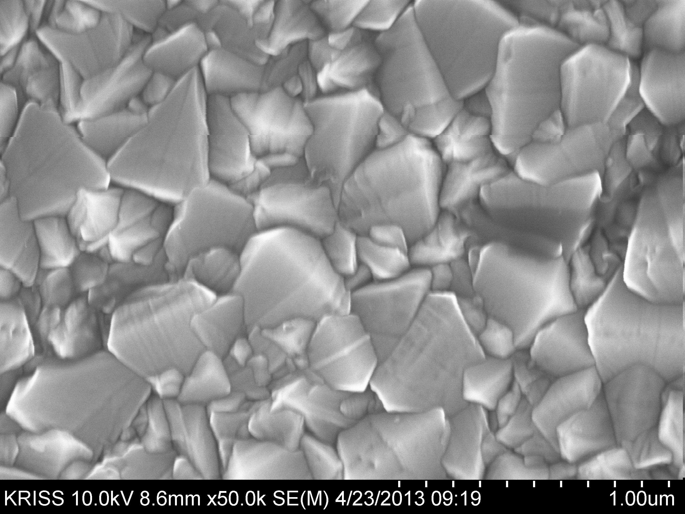

Prototype
this is imagearea

calibarate ruler
measure_distance
meter
centi meter
milli meter
micro meter
nano meter
Angstrom
이미지와 캔버스의 비율 : 동적으로 변경 받아가져와 붙힘
실제 이미지 픽셀 : 동적으로 변경 받아아가져와 붙힘
캔버스 픽셀 : 동적으로 받아 가져와 변경
측정한 원도우 :
원도우자와 실제자의 비율 :
실제 거리 표시 :